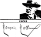
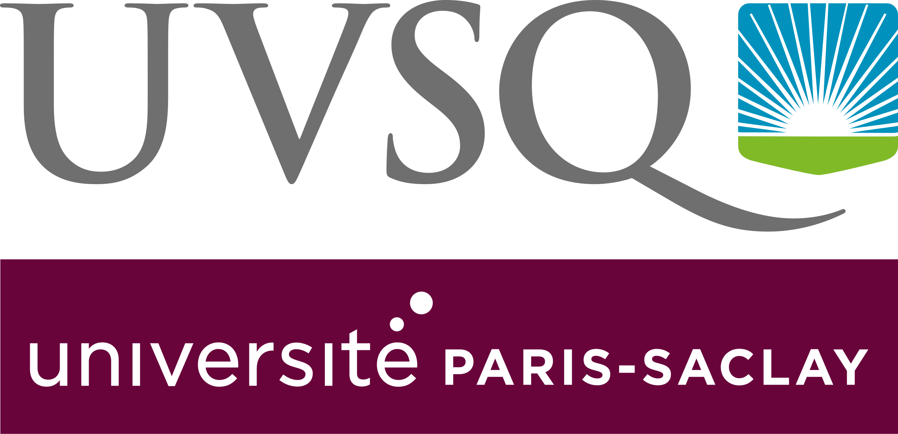
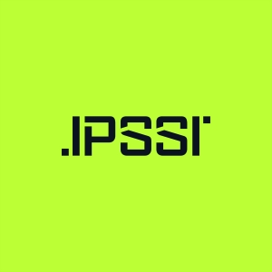
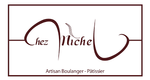
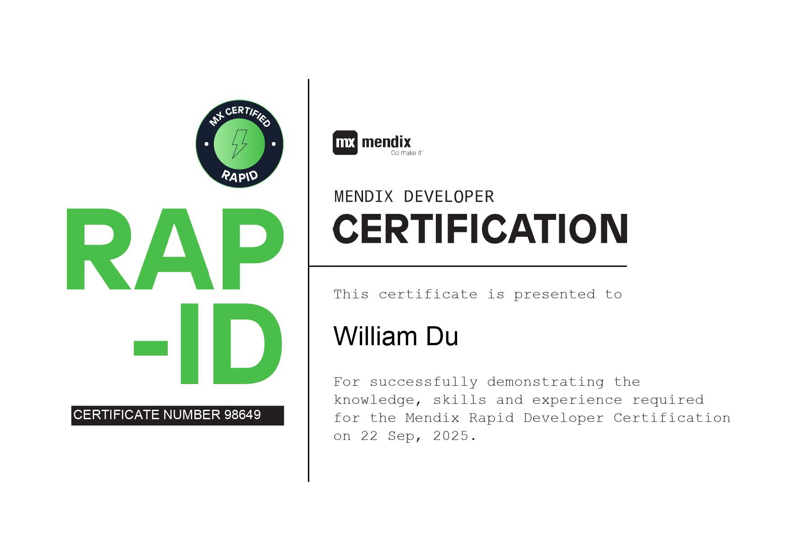

2019 - 2022
Baccalauréat Générale
Lycée Romain Rolland, Ivry sur Seine

Bonjour, je suis
Découvrez mon parcours, mes projets et comment me contacter !
Découvrir mon parcoursJe m'appelle William, j'ai 23 ans et je suis étudiant en 2ème année de BTS SIO option SLAM.
J'ai commencé à m'intéresser à l'informatique dès mon plus jeune âge, en jouant à des jeux vidéo et en explorant les bases de la programmation.
Depuis, ma passion pour l'informatique n'a cessé de grandir, et je suis déterminé à en faire ma carrière.
Je suis aussi également secouriste mais bénévole actuellement chez l'AMNS FFSS depuis début février 2026.
Découvrez mes passions et ce que je fais actuellement en informatique.
Lycée Romain Rolland, Ivry sur Seine

UVSQ - Université de ST Quentin en Yvelines, Versailles

UVSQ - Université de ST Quentin en Yvelines, Versailles
IPSSI Grande École Informatique, Paris XIIème

En coursFFSS - Fédération Française de Sauvetage et de Secourisme
Le BTS SIO est un diplôme français de niveau Bac+2 qui forme des professionnels capables de concevoir, développer et maintenir des solutions informatiques adaptées aux besoins des entreprises.
En tant qu'étudiant en BTS SIO option SLAM, je me spécialise dans l'assurance qualité logicielle et la détection de bugs, garantissant ainsi la fiabilité et la performance des applications.
Passionné par les méthodologies de test et l'amélioration continue, je m'engage à maîtriser les outils et pratiques les plus récents du domaine du QA (tests automatisés, tests de régression, tests de performance).
Mon objectif est de devenir un testeur QA compétent et rigoureux, capable d'assurer la qualité des applications à chaque étape du cycle de développement et de contribuer à la livraison de solutions logicielles robustes et fiables.
Parallèlement, je maintiens une solide expertise en développement web et en programmation d'applications web et mobiles, compétences essentielles pour comprendre en profondeur l'architecture des solutions que je teste et identifier efficacement les anomalies.
Préparation des viennoiseries et entretien de la boutique

Plus d'infosCréation d'une interface graphique responsive et optimisation du site
 Voir le projet
Voir le projet
Refonte intégrale du site web VAL FUSION GROUPE et VAL FACADE via la plateforme no-code sur IONOS
Réalisation complète du site en FullStack avec Symfony et Docker pour la partie Front End et Back End
 Voir le site
Voir le site
 Voir le site
Voir le site
Assister lors d'événements publics et fournir les premiers secours en cas d'urgence.
J'ai obtenu la certification Mendix qui m'avait été proposée par un proche familial travaillant dans le domaine de l'informatique.
Cette certification m'a permis de découvrir une nouvelle plateforme de développement low-code, et d'acquérir des compétences en création d'applications rapidement et efficacement.

J'ai également obtenu une autre certification de Google Play It Safe: Manage Security Risks m'apprenant les bonnes pratiques de sécurité liées à la Cybersécurité.
Cette certification m'a été très utile pour comprendre les enjeux de la sécurité informatique dans le développement d'applications mobiles.

J'ai également passé le certificat de compétence de secouriste - PSE1 (premier secours en équipe de niveau 1) du 24 janvier au 1 février 2026.
Cette certification me permettra d'acquérir les compétences nécessaires pour intervenir efficacement en cas d'urgence et fournir les premiers secours.